Venice
On Water & Stone
Architectural work produced during the Boston University Venice Academy study abroad program, Fall 2025. Projects include an exhibition building for an art school, an apartment residence study after Vittorio Gregotti, structural and fenestration analyses of Ca' Pesaro and Ca' Dario, and a large-scale drawing of the Grand Canal. Drawing practice was influenced by the material and spatial approach of Carlo Scarpa.
Exhibition Building Model

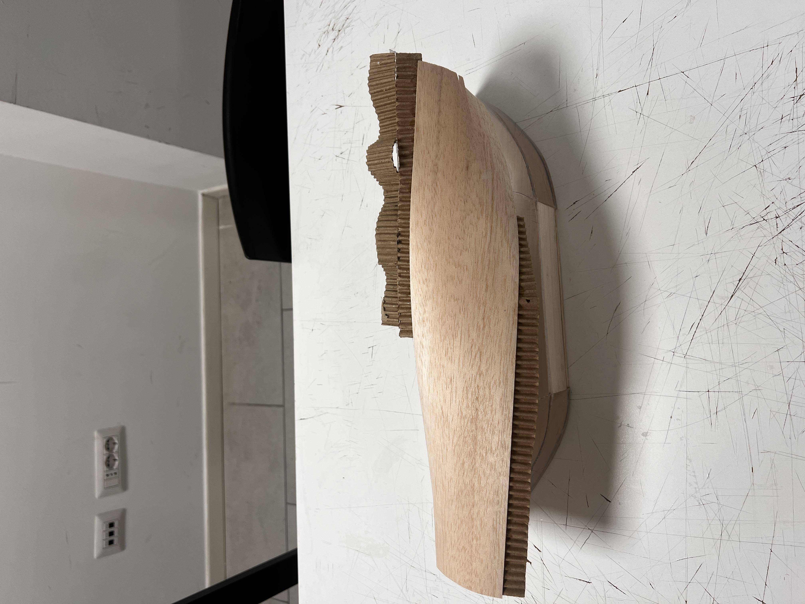
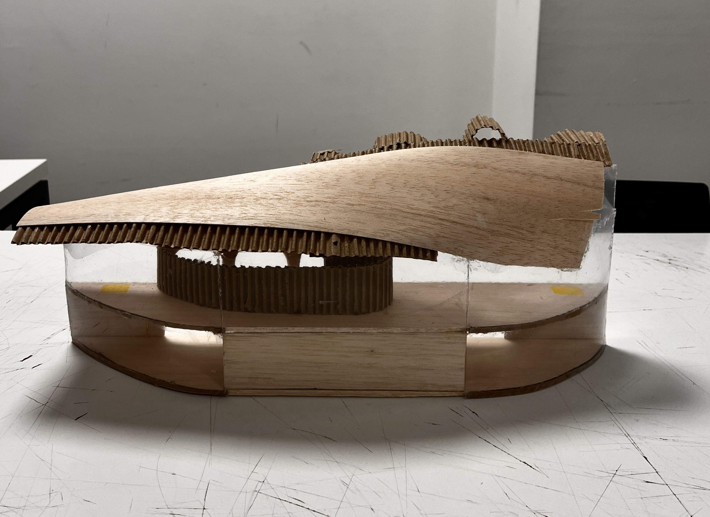
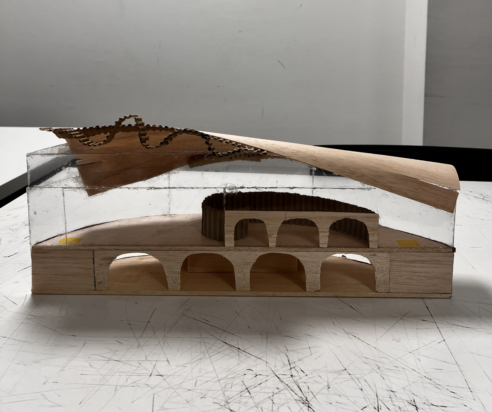
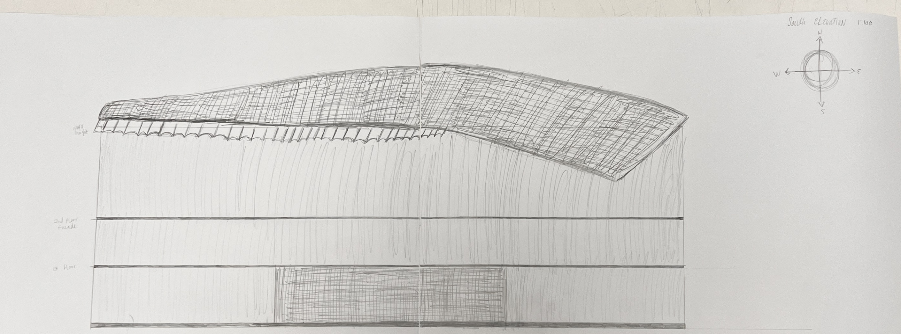
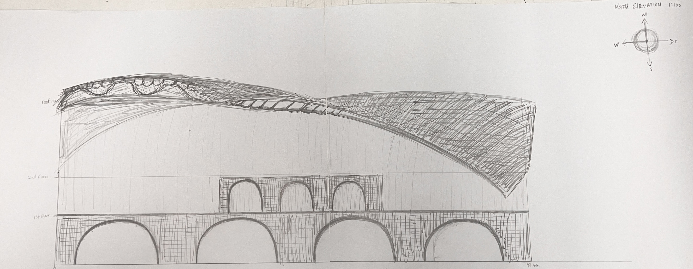
Work from Venice

Exhibition Building — Drawings
Design drawings for the Venice exhibition building. Plan, elevations, and sections developed in AutoCAD to document the gondola-derived massing and spatial organization.
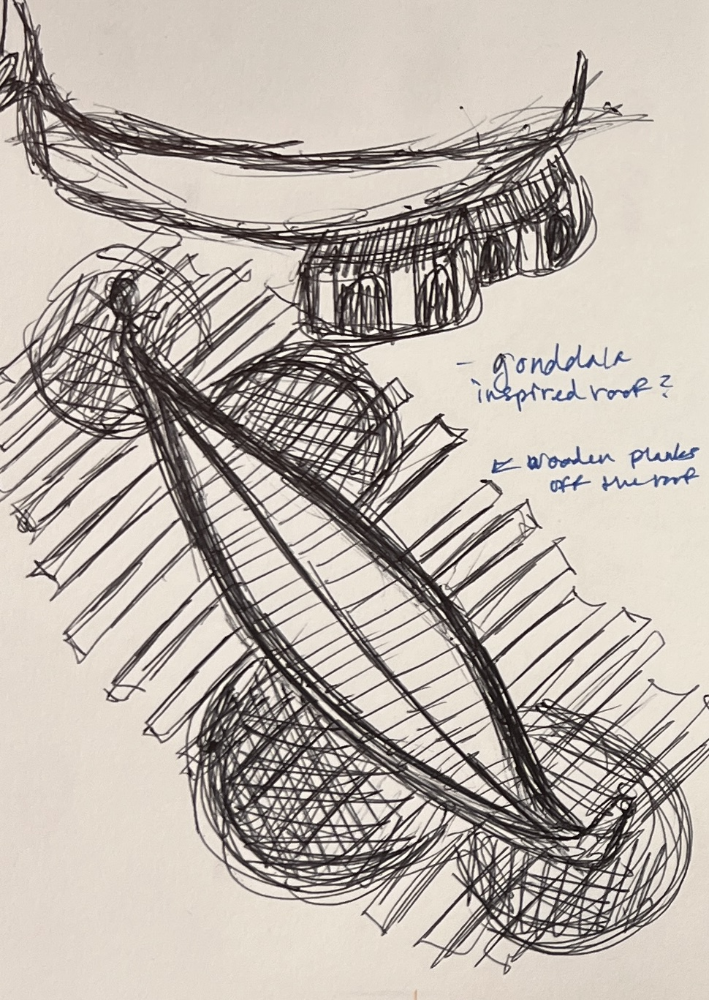
Exhibition Building — Roof Study
Roof concept drawings for the exhibition building, investigating structural spanning and the relationship between canopy form and interior light.
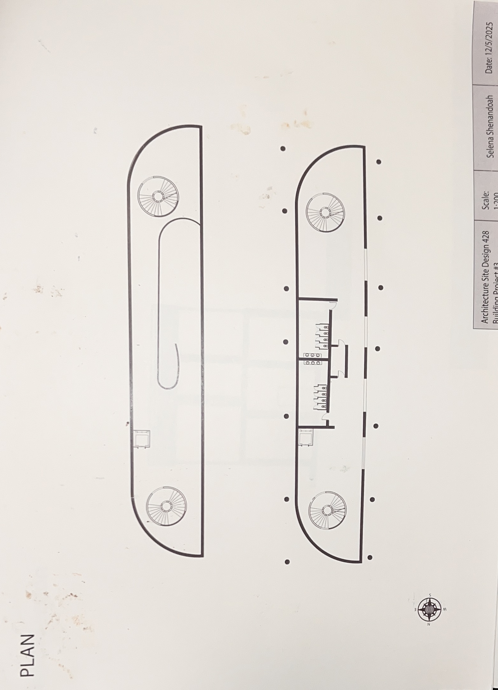
Site Design — Pavilion Plan
Site plan situating the pavilion within its Venetian urban context and waterfront edge.

Site Design — Final Exhibition
Final site design drawing presented at the Venice architecture drawing exhibition, integrating landscape, program, and built structure.
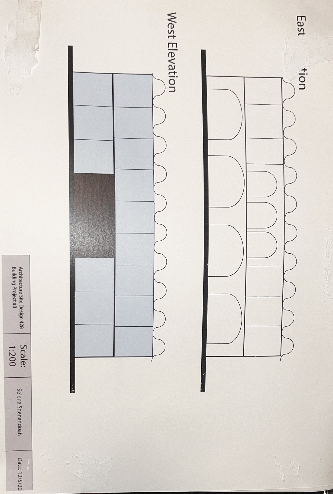
Exhibition Building — East Section
East section through the exhibition building, revealing the structural system and the interior spatial sequence from lower to upper level.
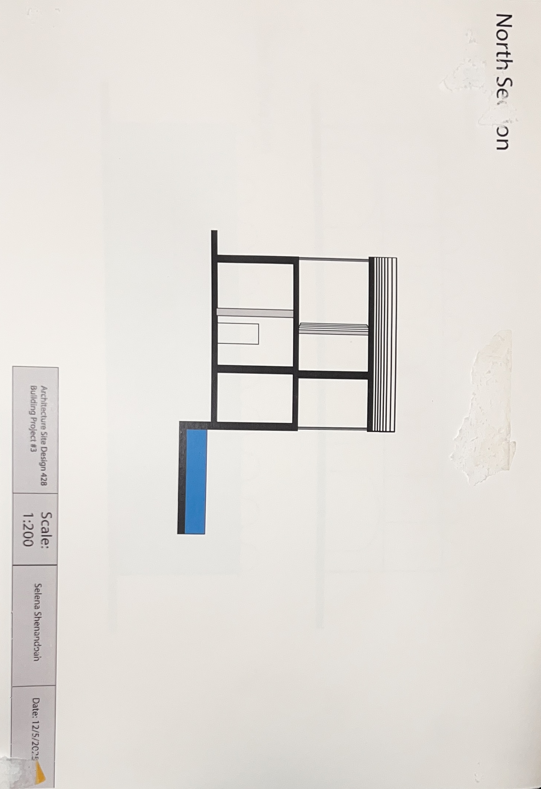
Exhibition Building — North Section
North section showing the relationship between the interior volumes and the canal-facing facade with its continuous glass wall.

Apartment Residence — Plan (Gregotti)
Plan analysis of a Venetian apartment after Vittorio Gregotti, documenting the spatial logic of a historic residential typology.
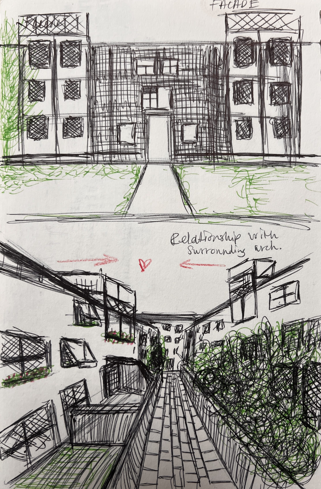
Apartment Residence — Drawings (Gregotti)
Elevations and detail drawings of the Gregotti apartment residence study, exploring material composition and facade logic.

Ca' Pesaro — Structural Diagram
Diagram of the structural elements of Ca' Pesaro, the Baroque palazzo on the Grand Canal designed by Baldassare Longhena.

Ca' Dario — Fenestration Diagram
Fenestration analysis of Ca' Dario, documenting the asymmetrical window composition of this late 15th-century Renaissance palazzo.

Grand Canal — Final Drawing
Large-scale observational drawing of the Grand Canal, approximately seven meters by two meters. Pen, markers, and acrylic paint layered to capture the density of Venetian facades.
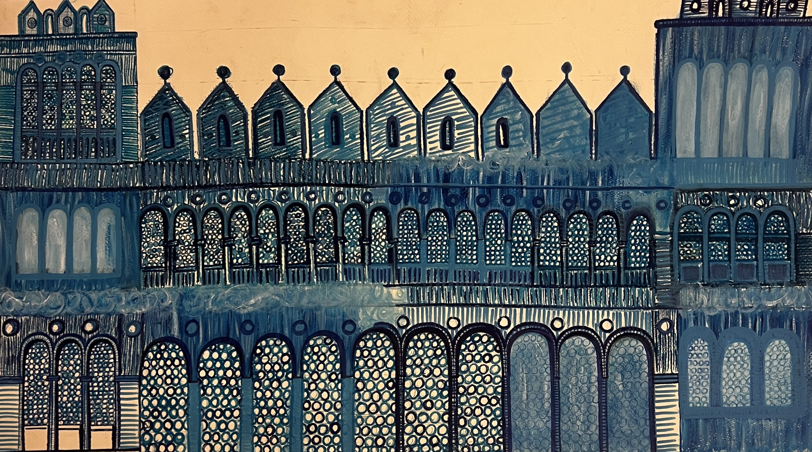
Exhibition — Facade Drawing
Facade drawing presented in the Venice architecture drawing exhibition, capturing the material texture and proportional logic of a Venetian palazzo front.

Grand Canal Skyline Drawing
Hand-drawn panoramic study tracing the sequence of domes, campaniles, and rooflines that define Venice's skyline along the Grand Canal.